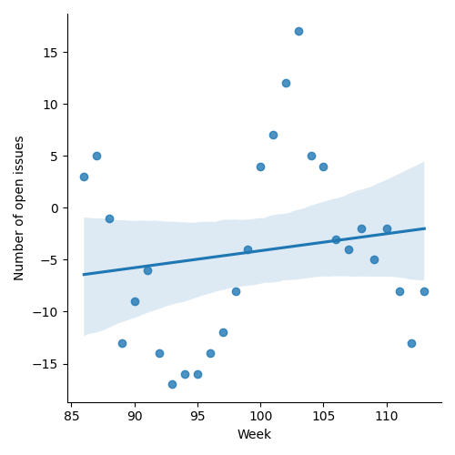
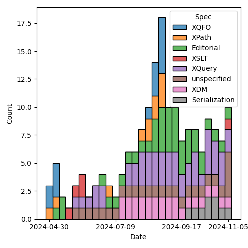
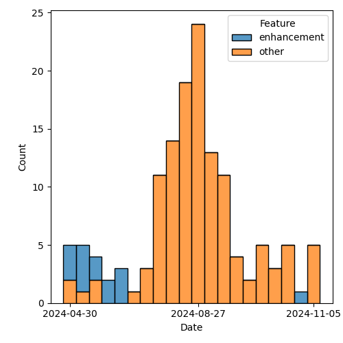

QT4 CG Meeting 098 Minutes 2024-11-12
Meeting index / QT4CG.org / Dashboard / GH Issues / GH Pull Requests
Table of Contents
- Draft Minutes
- Summary of new and continuing actions
[0/9] - 1. Administrivia
- 2. Technical agenda
- 2.1. PR #1565: 1555 change default for parse json escape
- 2.2. PR #1470: 689 fn:stack-trace: replace with $err:stack-trace
- 2.3. PR #1562: 1561 Correct the schema for XSLT 4.0
- 2.4. PR #1560: 1548 Clarify default for xsl:output/@indent
- 2.5. PR #1558: 1522 Fix syntax ambiguity in patterns
- 2.6. PR #1546: 1538 Add XSLT support for json-lines
- 2.7. PR #1544: Allow (some) self-references in global variables
- 2.8. PR #1454: 1449 Relax rules on multiple xsl:includes
- 3. Any other business
- 4. Adjourned
Draft Minutes
Summary of new and continuing actions [0/9]
[ ]QT4CG-080-07: NW to update the build instructions in the README[ ]QT4CG-082-02: DN to work with MK to come to agreement on the fn:ranks proposal[ ]QT4CG-088-01: NW to consider how best to add a dedication to MSM.[ ]QT4CG-088-04: [Someone] needs to update the processing model diagram needs vis-a-vis the static typing feature[ ]QT4CG-089-01: CG to draft a PR that attempts to resolve the operators described in #755 to a smaller number of orthogonal choices.[ ]QT4CG-097-02: MK to make the XSD schema component references into links to XSD[ ]QT4CG-097-03: DN to proposal an axis for accessing the siblings of a node.[ ]QT4CG-098-01: NW to update the Relax NG grammar for XSLT 4.0[ ]QT4CG-098-02: NW to look at the XSL stylesheet for XSD, #374.
1. Administrivia
1.1. Roll call [10/12]
DN, EP give regrets.
[X]David J Birnbaum (DB)[X]Reece Dunn (RD)[X]Sasha Firsov (SF)[X]Christian Grün (CG)[X]Joel Kalvesmaki (JK)[X]Michael Kay (MK)[X]Juri Leino (JLO)[X]John Lumley (JWL)[ ]Dimitre Novatchev (DN)[X]Wendell Piez (WP)[ ]Ed Porter (EP)[X]Norm Tovey-Walsh (NW). Scribe. Chair.
1.2. Accept the agenda
Proposal: Accept the agenda, amended to include PR #1569 in the “merge without discussion” group.
Accepted.
1.2.1. Status so far…
These charts have been adjusted so they reflect the preceding six months of work.

Figure 1: “Burn down” chart on open issues

Figure 2: Open issues by specification

Figure 3: Open issues by type
1.3. Approve minutes of the previous meeting
Proposal: Accept the minutes of the previous meeting.
Accepted.
1.4. Next meeting
This next meeting is planned for 19 November. Any regrets?
DB gives for 19 and 26 November.
1.5. Review of open action items [1/8]
(Items marked [X] are believed to have been closed via email before this agenda was posted.)
[ ]QT4CG-080-07: NW to update the build instructions in the README[ ]QT4CG-082-02: DN to work with MK to come to agreement on the fn:ranks proposal[ ]QT4CG-088-01: NW to consider how best to add a dedication to MSM.[ ]QT4CG-088-04: [Someone] needs to update the processing model diagram needs vis-a-vis the static typing feature[ ]QT4CG-089-01: CG to draft a PR that attempts to resolve the operators described in #755 to a smaller number of orthogonal choices.[X]QT4CG-097-01: MK to add a note explaining why base-type and friends are functions in theschema-type-record[ ]QT4CG-097-02: MK to make the XSD schema component references into links to XSD[ ]QT4CG-097-03: DN to proposal an axis for accessing the siblings of a node.
1.6. Review of open pull requests and issues
1.6.1. Blocked
The following PRs are open but have merge conflicts or comments which suggest they aren’t ready for action.
1.6.2. Merge without discussion
The following PRs are editorial, small, or otherwise appeared to be uncontroversial when the agenda was prepared. The chairs propose that these can be merged without discussion. If you think discussion is necessary, please say so.
- PR #1564: 1563 Fix fn:schema-type examples
- PR #1562: 1561 Correct the schema for XSLT 4.0
- PR #1559: 1515 Add cross-references to map:build
- PR #1558: 1522 Fix syntax ambiguity in patterns
- PR #1557: 1553 Expand explanation of predicates in axis steps
- PR #1549: 1534 Allow xsl:result-document/@select
- PR #1543: Drop fn:element-number
- PR #1535: 1478 Drop variadic functions
- PR #1569: 1567 Supply missing change metadata
- PR #1556: 1486 Editorial corrections & cleanups
Proposal: Merge without discussion.
Accepted.
2. Technical agenda
2.1. PR #1565: 1555 change default for parse json escape
See PR #1565
MK introduces the PR.
- MK: This arose from a bug report in the QT3 test suite; there were tests that
were incompatible with the specification.
- Came to the conclusion that the spec is wrong and the tests are correct.
- The change is that escaping JSON is false by default.
- “False” is by far the most usable option; looking at the history of 3.1, we changed the polarity of the option but we forgot to change the default.
- CG: Yeah, that’s fine.
Proposal: Accept this PR.
Accepted.
2.2. PR #1470: 689 fn:stack-trace: replace with $err:stack-trace
See PR #1470
- CG: We’ve talked about this before.
- MK suggested to return a function instead of an item or a string. That’s the change.
- JWL: Can you remind me why we wanted a function?
- CG: The stack trace can be extensive, this defers computation until you need it.
- MK: This drops the free-standing function as well.
- CG: Yes.
Proposal: Accept this PR.
Accepted.
2.3. PR #1562: 1561 Correct the schema for XSLT 4.0
See PR #1562
MK observes that the diff doesn’t show well on this one…
- MK: We publish the schema in two places, both free-standing and copied into an appendix.
- NW: Could we just stop doing that? Is there value in the appendix?
- RD: Are there cross-references into it?
- MK: No.
MK reviews the actual changes in the PR.
- MK: The schema was actually invalid. And some of the stylesheets were invalid against the schema. There are already some caveats that say there are stylesheets that aren’t valid even though they’re correct. That caveat now extends to xsl:note.
MK reviews the changes in the schema.
ACTION: QT4CG-098-01: NW to update the Relax NG grammar for XSLT 4.0
- RD: Would it make sense to generate the schema from the spec. We could put fragments of XSD and RNG into the specification and then pull them all together at the end.
- MK: Are you volunteering?
- RD: I’ll take a look.
ACTION: QT4CG-098-02: NW to look at the XSL stylesheet for XSD, #374.
- SF: Rendering in the specification or in the IDE with a live feed is a problem. If it could be solved, it would be game changing to the coding experience.
Proposal: Accept this PR.
Accepted.
2.4. PR #1560: 1548 Clarify default for xsl:output/@indent
See PR #1560
- MK: The serialization doesn’t define the defaults, that’s up to the host language.
- I found that XSLT didn’t define a default for indent. This PR fixes that.
- It also adds a couple of section numbers, which messes with the diff.
- And in a few places
jsonandadaptiveserialization weren’t mentioned.
- MK: All of the prose about defaults for parameters has been moved into a new
section.
- … The only change is to the indent parameter which now says the default is “yes” for HTML and XHTML and “no” everywhere else.
Some discussion of how the diffs are constructed.
Proposal: Accept this PR.
Accepted.
2.5. PR #1558: 1522 Fix syntax ambiguity in patterns
See PR #1558
- MK: This is an ambiguity in the XSLT pattern syntax that JWL identified.
- The solution was to remove
FunctionCallPinRootedPathbecause it only gives an option you can get to directly (introducing an ambiguity).
- The solution was to remove
Proposal: Accept this PR.
Accepted.
2.6. PR #1546: 1538 Add XSLT support for json-lines
See PR #1546
- MK: This adds
json-linesto the XSLT spec, the bulk of the work is in the Serialization specification and we’ve already accepted it.- … It adds it as an option in various places and makes a brief mention of what it does.
- JLO: Is it possible to unify the XSLT and XQuery serialization parameters?
- MK: I think moving things into the Serialization specification has refactored
about as far as we can.
- … There are some differences that have nothing to do with XQuery.
- JLO: Is there a way for a user to find out what the current, actual values are? The system that XQuery is running in will override some of those defaults.
- MK: You can override defaults via an API. And the API can also discover what
your current settings are.
- … There’s no way to ask in XSLT or XQuery code what the current settings are. I’m not quite sure why you’d want to know.
Proposal: Accept this PR.
Accepted.
2.7. PR #1544: Allow (some) self-references in global variables
See PR #1544
- MK: This mimics in XSLT a change that was made to XQuery.
- … The spec had said that a global variable isn’t visible in its own declaration.
- … It is now visible, but trivial self references are disallowed by circularity rules.
- … There’s an example where self-reference does make sense, for example, a recursive inline function.
- MK: This removes an unnecessary restriction.
- JWL: Is this only the case with function-valued global variables? Can you do it with any other kind?
- MK: You could do it with maps.
- JWL: That’s effectively a function…
- JLO: If it really only applies to functions, should we say that?
Proposal: Accept this PR.
Accepted.
2.8. PR #1454: 1449 Relax rules on multiple xsl:includes
See PR #1454
- MK: We did take a look at it once before.
- … In the past, having circular includes was an error.
- … That meant you couldn’t write stylesheets that simply included everything they depended on because you’d get circularities.
- … This change says that if you have xsl:includes at the same level, we ignore the duplicates. Only the first one counts.
- … Duplicates includes the entry point at the stylesheet level.
- MK: There is an edge case where this gives you an incompatibility.
- … In 3.0 a circularity is an error but a “diamond” isn’t. A diamond where both B and C include D would usually lead to an error because it would include two templates or functions with the same name.
- … In the rare case where an included module only contains template rules without names then you’d get two copies and next-match would go to the next.
- JLO: Is there some kind of scoping mechanism? Can the output change when xsl:includes are inserted at different levels? Can you have different variables if they’re at different levels?
- MK: No. All the declarations are global to a package. They’re import precedence only depends on the level. The order of tebmplate rules could be different which matters if you haven’t specified priority.
- JLO: Shouldn’t we say that also the last one wins?
- MK: In some ways, yes, but that doesn’t work with static variables because
it’s the first one that counts. And you can only reference it in a static
declaration that comes after it. So you wouldn’t know if the include you’d
already read was the last one.
- … The evaluation of static expressions is assumed to be serializable. That sort of preprocessing stage has to be sequential and you have to know when it’s the first.
- JLO: Are those includes at the same level turned into a flat list?
- MK: You’re processing your source hierarchically. For static variables and expressions, you work hierarchically. If you reach an xsl:include, you read it immediately, and any variables it contains are avialable anywhere after that include. It’s sort of flattened.
- WP: I think that the edge case that we’re worried about is really out there on the edge. I think the current behavior might really be considered a bug.
- MK: We’ll find out in time!
Some further discussion of includes and nesting and static variables.
Proposal: Accept this PR.
Accepted.
3. Any other business
JWL shows a demo of hyperlinking the grammar.
- JWL: As a consequence of building the iXML grammars, I now have hyperlinked
grammars.
- … Going from the nonterminal to its definition is easy.
- … What I can do now is, for a given rule, show you all the rules that reference it!
- … I can probably reduce this to a little bit of JavaScript.
- MK: I’d love to get rid of the stuff in the current spec where you have to tag the most important occurence of a rule with an ID. I’d love to automate that.
- NW: I’d be happy to try to get something like this in the specification.
CG wonders if we can talk about EXPath.
Some discussion of the state of expath.org.
- NW: Should we follow up in the issue about which ones we want to maintain.
- JWL: They’re not terribly complex. But archive was never satisfactorily finished.
- … And the http-client one is a lot more complex.
- MK: The file and binary ones should be fairly straight-forward.
- MK: Should support for the binary functions be intrinsic in our specifications?
- … File is harder because it depends on non-determinism.
- JWL: There are only about 15 functions.
- JLO: What I get as feedback from other implementors is that there are too many
functions and everything is part of the spec. The spec alone is not enough, what about
the repo and the test steps?
- … Would it have been better to have a CSV module, for example?
- MK: Should the spec should be logically modular, and should it be editorially modular, are separable questions.
- CG: If we want to have future versions of the file and binary modules, we need
to extract them from the current solution and publish them here.
- But it doesn’t have to be part of 4.0.
- RD: We talked in the past about things like packaging and that sort of thing. This seems like it fits into that. Is the package spec in XQuery or XPath?
- JLO: That’s XPath.
- RD: So there’s a question of how we specify this? Do we publish them as notes, as full specifications, etc.
- WP: I think that merging them in is probably a good thing. But with respect to how that bears on complexity and implementability is maybe a separate issue.